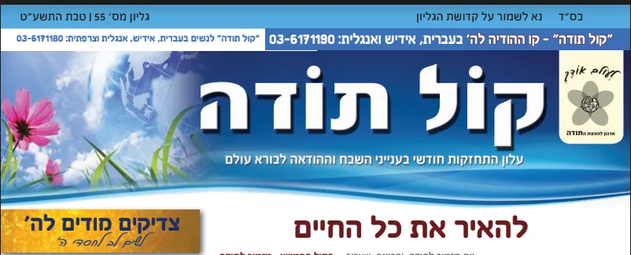
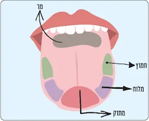

הודיה ותודה לה'
מעלת ההודיה, שיעורים, חוברות, עלוני קול תודה, ההודיה במעגל השנה ומוצרי הודיה
55 פריטים
אוספים ועמודים ראשיים
פנקס ההודיה
מצגת על פרקי אבות פרק א קרא עוד חידון על פרק ראשון של מסכת אבות משחק פרק אבות א׳ משחק על משנה אבות פרק ב משנה …

עלוני קול תודה
עלון חודשי - קול תודה עלון מרתק ועשיר בנושא ההודיה לה' קרא עוד מקבץ עלוני קול תודה מאמר וסיפור לכל חודש בשנה מ…

אשר יצר
ברכון אשר יצר לקניה ברכון כיס המעורר את הלב לכוון בברכת אשר יצר מגיע בנוסח ספרד, ועדות המזרח. קרא עוד שיעורים …

ארגון הקול החמישי - ההודיה לה', תודה להשם
הקול החמישי קול תודה - עולם של הודיה קניית רגשות חיוביים מלאים שמחה אהבה והודיה לה' באמצעות ספרים, חוברות, פנק…

מתחברים להודיה
מתחברים להודיה בחמשת החושים החוש השישי טעם דקה משנה חיים טעמו וראו כי טוב להודות לה' שמיעה שמיעת הקו המחזק - ק…

חוברות אהבה והודיה
שערי הודיה מדריך מעשי לחיי הודיה מסלולים נהירים השוים לכל נפש בקיום מצות אהבת השי"ת על פי יסודות נאמנים מתורתם…

ההודיה במעגל השנה
כוונת הצום ביום כיפור התרופה הנפלאה לצום קל כוונת הצום מהיסוד ושורש העבודה קרא עוד פירות הילולים - ט"ו בשבט הב…

קול תודה
הרצאות נפלאות על מעלת ההודיה הרב אשר דרוק קרא עוד הישועה בזכות ההודיה הרב אשר קובלסקי שליט"א קרא עוד וורט של ה…

אדר
אדר אדר - להודות גם על הדברים הרעים תשע"ה קרא עוד אדר - חייב איניש לבסומי בפוריא תשע"ו קרא עוד אדר - ספר הזכרו…

תפילת תודה
מכתב מבורא עולם, דף עבודת תודה, קרא עוד

נר חנוכה ואהבת ה'
אור ההודיה: עיון מעמיק במהות נר חנוכה ואהבת ה' הספר במארג העשיר של המצוות והמנהגים ביהדות, מעטות הן המצוות הטו…
פנקס ההודיה (3)
מצגת על פרקי אבות פרק א
פנקס ההודיה מצגת על פרקי אבות פרק א מצגת ראשונה https://gamma.app/docs/-x7h8obqmsvk2qma מצגת שניה מגצת על משנ…
חידון על פרק ראשון של מסכת אבות
משחק על משנה אבות פרק ב משנה א
פנקס ההודיה משחק על משנה אבות פרק ב משנה א מבחן ברמה ראשונה https://claude.ai/public/artifacts/202e1dbc-993f-…
עלוני קול תודה (2)
עלון חודשי - קול תודה
עלוני קול תודה עלון חודשי - קול תודה עלון מרתק ועשיר בנושא ההודיה לה' מידי חודש בחודשו, יוצא בס"ד עלון מרתק ו…

מקבץ עלוני קול תודה
עלוני קול תודה מקבץ עלוני קול תודה מאמר וסיפור לכל חודש בשנה מעלוני קול תודה (1-30) חוברת עלוני קול תודה מ 1-…
אשר יצר (4)
ברכון אשר יצר לקניה
אשר יצר ברכון אשר יצר לקניה ברכון כיס המעורר את הלב לכוון בברכת אשר יצר מגיע בנוסח ספרד, ועדות המזרח. קול תוד…

שיעורים לשמיעה
אשר יצר שיעורים לשמיעה לחץ כאן לשמיעת סדרה של 30 שיעורים על ברכת אשר יצר מהרב אברהם כהן מרבני קול תודה שיעורי…

שיעורים לצפיה
אשר יצר שיעורים לצפיה שיעורים לצפיה הרב ישעיהו הבר, הרב מנחם שטיין, הרב חנניה צ'ולק, וד"ר מנחם ברייער - כוחה …

סיפורים
אשר יצר סיפורים עלון נפלא על כוחה של ברכת אשר יצר - אשר יצר עלון.pdf סיפור נפלא על כוחה של אשר יצר שהופיע בעל…
מתחברים להודיה (6)

שמיעה
מתחברים להודיה שמיעה שמיעת הקו המחזק - קו קול תודה - ההודיה לה' הסיפור שמאחורי הקו - ממודעה בעיתון לארגון ארצ…

ראיה
מתחברים להודיה ראיה לקרוא את העלונים של קול תודה זמן לא רק לאחר הקמת קו קול תודה (ראה בשמיעה). הוחלט להרחיב א…

פירות הילולים - חוברת נפלאה לטו בשבט על חסדי ה' בפירות
מתחברים להודיה ריח ריח להודות על הריח בחוברת פירות הילולים לומדים להודות על חמשת החושים החוברת שתהפוך לכם את ש…

מישוש
מתחברים להודיה מישוש כותבים את חסדי ה' - בפנקס ההודיה

החוש השישי
מתחברים להודיה החוש השישי לחוש את הבורא מאמר מדהים המופיע בספר הכלים – שני פסיכולגים מניו יורק ובלוס אנז'לס ש…

הודיה זו שמחה
מתחברים להודיה הודיה זו שמחה תחושת הכרת הטוב גורמת למוח שלכם לשמוח מאמינים שככל שתרגישו אסירי תודה על כל השפע…
חוברות אהבה והודיה (5)
שערי הודיה מדריך מעשי לחיי הודיה
חוברות אהבה והודיה שערי הודיה מסלולים נהירים השוים לכל נפש בקיום מצות אהבת השי"ת על פי יסודות נאמנים מתורתם ש…

שערי אהבה
חוברות אהבה והודיה שערי אהבה שערים מאירים לעולם הנפלא של אהבת ה’, על פי יסודות נאמנים מתורתם של חז”ל ומדבריהם…

השמחה ההודיה והשירה
חוברות אהבה והודיה השמחה ההודיה והשירה חשיבותה של ההודיה והכרת הטוב בתורה ידבר על מעלת ההודיה והכרת הטוב, שבז…

צדיקים מודים להשם
חוברות אהבה והודיה צדיקים מודים להשם סיפורים נפלאים על צדיקים שהודו להשם חוברת מלאה סיפורים מכל גדולי ישראל ב…

ספרי הודיה בקובץ PDF
חוברות אהבה והודיה ספרי הודיה בקובץ PDF להורדה בחינם גם זו לטובה - הרב מרגולין.pdf ויוסף עוד דוד - הרב יוסף ב…
ההודיה במעגל השנה (7)
כוונת הצום ביום כיפור
ההודיה במעגל השנה כוונת הצום ביום כיפור התרופה הנפלאה לצום קל כוונת הצום מהיסוד ושורש העבודה חוברת נפלאה שתהפ…

פירות הילולים - ט"ו בשבט
ההודיה במעגל השנה פירות הילולים - ט"ו בשבט הבנת אמיתית של מעלת המנהג של אכילת פירות ט"ו בשבט. \עם סדר אכילתם …

כיצד מנקים לפסח בשמחה ובקלות
ההודיה במעגל השנה כיצד מנקים לפסח בשמחה ובקלות רעיונות נחמדים לנקות לפסח - מתוך שמחה והודיה לחץ כאן לראות את …

תוף מרים - לפסח ולכל השנה
ההודיה במעגל השנה תוף מרים - לפסח ולכל השנה מתאים מאוד למורות. על מרים הנביאה - אם השירה בישראל לכבוד המורה ה…

פורים - מבצעי משלוח מנות
ההודיה במעגל השנה פורים - מבצעי משלוח מנות פנקס, דיסק ומגנטים במבצעים מיוחדים כל שנה אתם מתלבטים בשאלה, מה לש…

חודש אהבה
ההודיה במעגל השנה חודש אהבה חודש טוב ומבורך! זוכים אנו להגיע לחודש של אהבה. חודש אלול כותב הסבא מקלם זצ"ל: הו…

שבת הגדול מהותו וענינו
ההודיה במעגל השנה שבת הגדול מהותו וענינו מה מיוחד בשבת הגדול והלקח היוצא מזה לחץ כאן לקרות את החוברת שבת הגדו…
קול תודה (4)
הרצאות נפלאות על מעלת ההודיה
קול תודה הרצאות נפלאות על מעלת ההודיה הרב אשר דרוק הרב אשר דרוק ידוע בשיעורי הנפלאים על מעלת ההודיה הוא ממחיש…
הישועה בזכות ההודיה
קול תודה הישועה בזכות ההודיה הרב אשר קובלסקי שליט"א הישועה בזכות ההודיה - הלקח שבסיפור - הרב אשר קובלסקי. \ ב…

וורט של הודיה
קול תודה וורט של הודיה הרב שלמה לוינשטיין ניתן ללחוץ כאן להוריד את הסרטון למחשב Your browser does not support…

הקול החמישי, נשמת כל חי
קול תודה נשמת כל חי נשמת כל חי הרב יוסף מוראדי - בארגון הידברות ניתן להזמין הרצאה מלווה בשקפים מדהימים על המעל…
אדר (7)
אדר - להודות גם על הדברים הרעים
אדר אדר - להודות גם על הדברים הרעים תשע"ה לחץ כאן להוריד עת העלון אדר - להודות גם על הדברים הרעים.pdf

אדר - חייב איניש לבסומי בפוריא
אדר אדר - חייב איניש לבסומי בפוריא תשע"ו לחץ כאן להוריד את העלון - אדר - חייב איניש לבסומי בפוריא.pdf

אדר - ספר הזכרונות
אדר אדר - ספר הזכרונות תשע"ז

אדר - משביע לכל חי רצון
אדר אדר - משביע לכל חי רצון תשע"ח לחץ כאן להוריד את הקובץ אדר - משביע לכל חי רצון.pdf

אדר - מאה אדנים ומאה הודיות
אדר אדר - מאה אדנים ומאה הודיות תשע"ט אדר - מאה אדנים ומאה הודיות.pdf

אדר - שמחת פורים הכרת טובה
אדר אדר - שמחת פורים הכרת טובה תש"פ לחץ כאן להוריד את הקובץ אדר - שמחת פורים הכרת טובה.pdf

אדר - שירת הפורים כיום הכיפורים
אדר אדר - שירת הפורים כיום הכיפורים תשפ"א לכץ כאן להוריד את הקובץ אדר תשפ''א עברית.pdf
תפילת תודה (1)
נר חנוכה ואהבת ה' (5)
אור ההודיה: עיון מעמיק במהות נר חנוכה ואהבת ה' - הקול החמישי...
נר חנוכה ואהבת ה' אור ההודיה: עיון מעמיק במהות נר חנוכה ואהבת ה' אור ההודיה: עיון מעמיק במהות נר חנוכה ואהבת ה…

תְּפִלָּה לִזְכּוֹת לְהַפְנִים וּלְקַיֵּם
נר חנוכה ואהבת ה' תְּפִלָּה לִזְכּוֹת לְהַפְנִים וּלְקַיֵּם התפילה משלבת בתוכה את הרעיונות המרכזיים מהספר: הו…

שירה
נר חנוכה ואהבת ה' שירה תפילת אור ההודיה אָבִי, מְקוֹר הָאוֹר וְהַחַיִּים פְּתַח לִי שַׁעֲרֵי הוֹדָיָה צַחִים …

סיפור על אהבה והודיה
נר חנוכה ואהבת ה' סיפור על אהבה והודיה סיפור הסיפור משלב את הרעיונות העמוקים של הספר - ההידור, ההודיה והאהבה …
בג
נר חנוכה ואהבת ה' בג !DOCTYPE .html <!DOCTYPE html> <html lang="en"> <head> <meta charset="UTF-8"> <meta name…